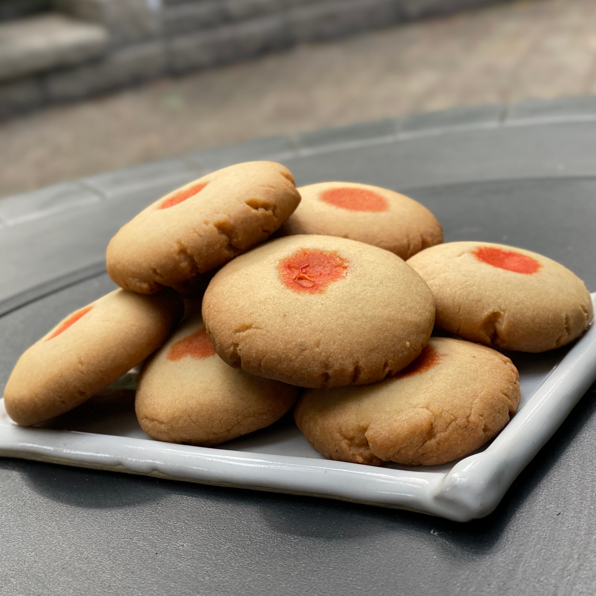

A Nankhatai is an Indian Eggless Shortbread Cookie, that was 16th century, around the time when India and the Dutch were important spice traders. The original recipe has been told to have six vital ingredients – clarified butter (Ghee), palm wine, flour, sugar, eggs, and almonds - but the recipe has been modified and changed over the years. Today, we now now make nankhatais by combining Sooji (Semolina), Butter, and Fine Wheat Flour. These Indian Biscuits are often topped with something, most likely almonds or pistachios, yet nankhatais can also be topped with chocolate and sometimes saffron. Today, I will teach you how to make Nankhatais, but I will use the chocolate veriation by topping each of them off with a Smartie.
Yields: 18 Servings
- 1 Cup + 2 Tbsp Maida (Or All-Purpose Flour)
- A Pinch of Salt
- 2 Tbsp Sooji (Semolina)
- 1/4 Tsp Baking Powder
- 1/4 Tsp Cardamom Powder
- 1 Small Pack of Smarties
- 1/3 Cup Powder Sugar
- 1/2 Cup Ghee (Softened Unsalted Butter)
How to Make/Procedure:
- Preheat the oven at 180 C at least for 10 mins, and prepare a tray with parchment paper
- Sieve (1 Cup) Maida in a bowl, add 2 tablespoons Semolina, 1/4 teaspoon Baking Soda and a Pinch of Salt. Mix them with a spoon
- Take 1/2 cup butter or ghee and powdered sugar in another bowl and beat them using a wire whisk or hand mixer until smooth and soft. Add 1/4 teaspoon cardamom powder and beat again
- Add sieved dry ingredients and mix well. Make a dough using your hand. If the dough looks very greasy, add 1-2 tablespoons more flour and mix well (don’t add too much flour)
- Divide dough into 18 equal portions and make round shaped balls from it. Take each ball and press a little between your palms to give it a patty like shape and place it over baking tray. Top each one with a Smartie and press gently with your finger. Keep enough space between each cookie because it will expand in size during baking.
- Place baking tray in preheated oven and bake at 350 degree Fahrenheit (180 degree Centigrade) for around 15-18 minutes or until cookie starts to turn light golden in color. After 15-minutes, check the cookies and keep an eye on it while further cooking (every oven has different settings and it may little longer or shorter time)
- Let them cool and become cripsy, then serve with Chai and enjoy!
|